fireworks
Dynamic Symbols
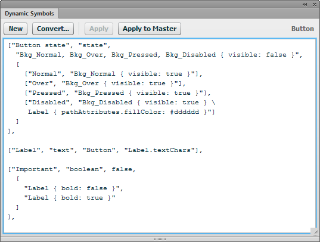
Creating the JavaScript code for a rich symbol is a tedious process, even if you're familiar with JS. Each time you make a change, you need to refresh the Common Library panel, reopen the folder that contains the symbol, drag another instance of the symbol into your document and then test it. You also end up with a lot of repetitive code to set the default symbol properties and to respond to changes to them. The Dynamic Symbols panel makes creating rich symbols much simpler and more efficient.
The overall process of using this panel looks like this:
- Create and name the elements that make up the symbol
- Select them and click New in the Dynamic Symbols panel
- Adjust the 9-slice guides as necessary and save the symbol document
- Drag the newly created symbol from the Common Library panel into a new document and select it
- Open the built-in Symbol Properties panel
- Start entering symbol properties in the Dynamic Symbols panel
- Whenever you edit the properties, click the Apply button to see the changes reflected in the Symbol Properties panel
- When the symbol works the way you want, click Apply to Master to copy the instance back to the master symbol document in the Common Library, making the changes permanent
While this may look a little involved, the test and modify cycle is much faster than the typical process of writing code for a rich symbol. You can make a change in the panel and immediately see the Symbol Properties panel update. While you still have to write some syntactically valid JavaScript arrays, it's a lot simpler than writing and debugging a rich symbol script from scratch. The panel also offers much more power than the Create Symbol Script dialog that comes with Fireworks.
This screencast shows a typical workflow:
Contents
- Creating a new rich symbol
- Creating rich symbol properties
- Property arrays
- Property types
- Creating state and boolean properties
- state properties
- boolean properties
- Referring to other properties
- Modifying the symbol properties
- Debugging symbol properties
- Updating the master symbol in the Common Library
- Converting an existing symbol
- Complex symbol example
Creating a new rich symbol
First create the elements that will be part of your rich symbol. Let's say you want to create a button with a text label and four different background states: normal, over, pressed and disabled. You might create four different background elements to show a different visual effect in each state, and then create a text element on top for the label:
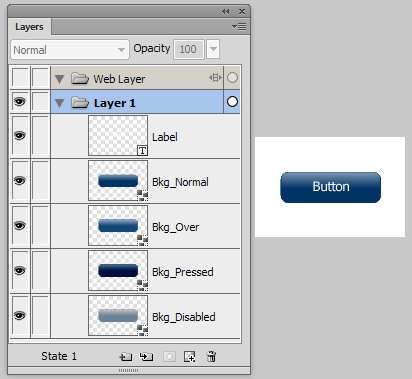
Make sure the background elements are all the same size and are stacked on top of one another. Also look in the Layers panel to make sure that all of the elements have a unique name. If you don't name an element, you won't be able to manipulate it via the Symbol Properties panel. Check text elements in particular; by default, they display their text contents in the Layers panel, but that's not a real name that can be used in the symbol. Any elements that don't have names will be automatically named with their element type and a number when you click the New button. For instance, the first unnamed text element will be Text1, the first rectangle will be RectanglePrimitive1, and so on.
Once you've created the elements for the symbol, select them all and click the New button in the Dynamic Symbols panel:
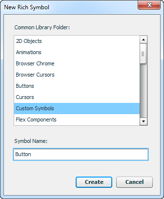
In the upper portion of the dialog, select the folder in which you want to save the symbol. It defaults to the Custom Symbols sub-folder inside the Common Library folder, but you can select a different sub-folder. Then enter a name for the symbol in the field below. You should not include the .graphic.png extension in the name.
In addition to saving the symbol as a .graphic.png file in the selected sub-folder, the panel will create a corresponding .jsf file. This JavaScript file supplies some of the code needed to implement the rich symbol functionality.
The newly created document is then opened, and the elements that you selected before clicking New are copied into the new symbol. (You can also create a new empty symbol by making sure nothing is selected when you click New.) You will probably want to adjust the 9-slice guides at this point. You can also add more elements to the symbol or modify the ones that were copied in.
At the bottom of the Layers panel, you will notice a locked and hidden layer named [DYNAMIC SYMBOL]. This layer contains a small, invisible square named [DATA]. Be sure not to delete this element, since it stores the dynamic properties and logic for the rich symbol. This is how the layers inside the earlier button example would now look:
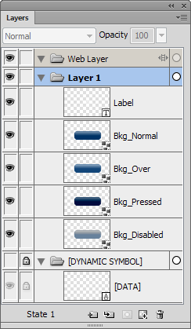
Now that you've created the contents of the rich symbol, you're ready to create the properties that will appear in the Symbol Properties panel when the symbol is selected.
Creating rich symbol properties
The properties for a rich symbol are specified as a series of JavaScript arrays that you type into the large text field in the Dynamic Symbols panel. As such, they follow the standard syntax for JS arrays. Be sure to include open and close brackets around each property array and put a comma after each one in the list (it's okay if you have an extra comma at the end).
String values should be surrounded by quotes. Returns outside of a string are fine, but if you want to break up a long string, type a \ and then press return to insert a newline. Anything following // up to the end of the line is treated as a single-line comment. Everything between /* and */ is treated as a multi-line comment, which is useful for temporarily removing a property from the Symbol Properties panel.
Property arrays
A property array looks something like this:
["Label", "text", "My Button", "LabelElement.textChars"],
Each array should contain at least the first 3 of the following 5 items (except state and boolean properties, which are slightly different and are described in the Creating state and boolean properties section below):
- name
- A string which will be displayed as the property's label in the Symbol Properties panel.
- type
- One of the strings listed in the Property Types section below, which specifies what kind of UI control is displayed for the property.
- value
- The default value of the property, which is used for new instances of the symbol.
- changes
-
A string, array of strings, or function that specifies to which elements and to which attributes the property's value applies. This item can be left out if the property is used only to store a value that is then used by a
stateorbooleanproperty. See Referring to other properties for more information.If you want to apply the value to the properties of multiple elements, just include an array of individual changes as the last item in the array. For instance, the following property would apply the selected color to both the
LabelandSublabelelements:["Label color", "color", "#000000", ["Label.pathAttributes.fillColor", "Sublabel.pathAttributes.fillColor"] ],Passing a function here instead of a string or array of strings lets you do more complicated processing. The function is called with a single parameter, an object containing the current values of all the properties, indexed by the name of the property. This can be used to make changes based on the values of multiple other properties. The function should return an array of arrays that specify the changes to make. Each array should contain the name of an element to change, the attribute to change, and the new value.
For instance, this change function adds parentheses to whatever string the user enters for the
Labelproperty:["Label", "text", "Label", function(values) { return [["Label", "textChars", "(" + values.Label + ")"]]; }], - filter
-
A string representing the state of other properties that must be met for this property to be applied. For instance, you could apply a color to a button label element only when the symbol's
Stateproperty is set toNormalorOver:["Button state", "state", "Bkg_Normal, Bkg_Over, Bkg_Pressed, Bkg_Disabled { visible: false }", [ ["Normal", "Bkg_Normal { visible: true }"], ["Over", "Bkg_Over { visible: true }"], ["Pressed", "Bkg_Pressed { visible: true }"], ["Disabled", "Bkg_Disabled { visible: true }"] ] ], ["Label color", "color", "#000000", "Label.pathAttributes.fillColor", "Button state: Normal, Over" ],Basic Boolean operators can be used in the filter string, so you can apply the change based on the value of multiple other properties, like
"Button state: Normal, Over && Enabled: true".
Property types
The following property types are supported, each of which displays a particular interface element in the Symbol Properties panel:
- color
-
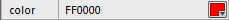
Displays a color picker. The default value should be a CSS color string, like
"#ff0000". - text
-
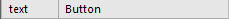
Displays a text field. The default value should be a string.
- number
-
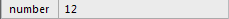
Displays a text field into which only numbers can be entered. The default value should be a number.
- font
-
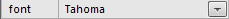
Displays a font picker listing the installed fonts. The default value should be the name of an available font.
- boolean
-
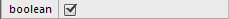
Displays a checkbox. The default value should be a Boolean. The
booleanproperty works a little differently than the others. See Creating state and boolean properties for more information. - state
-
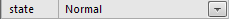
Displays a drop-down menu. The
stateproperty works a little differently than the others. See Creating state and boolean properties for more information. - mxml
-
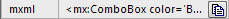
Displays a button that copies a string to the clipboard when clicked. This is used by the rich symbols in the Flex Components folder of the Common Library to enable you to copy the equivalent MXML code to the clipboard and then paste it into Flex to instantiate a similar element.
The third item in this property array should be either a string or a function. If you include a string, it can contain tokens that are replaced with the current values of other properties in the Symbol Properties panel. The first property is
$0, the second is$1, etc. The MXML property value for the Flex ComboBox symbol would look like this:"<mx:ComboBox color='$1' disabledColor='$2' \ editable='$3' enabled='$4' text='$5' textRollOverColor='$6' \ textSelectedColor='$7'></mx:ComboBox>"Note that there's no reason you have to use this property only for Flex components. For instance, you could include a snippet of CSS that would produce the same styles as the symbol's properties.
If you include a function as the value instead of a string, the function is called with a single parameter, an object containing the current values of all the properties, indexed by the name of the property. The return value of this function is used as the string that is copied to the clipboard when the user clicks the button. This gives you full control over how the string is generated.
A property that controls a button label element in a rich symbol might look like this:
["Label", "text", "My Button", "LabelElement.textChars"],
This would show a default label of "My Button". When the user changes the property, the entered value would set the textChars attribute of the LabelElement text element in the rich symbol, which would cause the label in the selected symbol instance to update to display the entered text.
Take a look at the Adobe site for documentation on which element properties can be modified by a rich symbol. Note that that list contains a number of errors. For instance, some listed attributes, like element.left or element.width, don't have any effect when set, and where it says element.pathattrs it should actually say element.pathAttributes. Also note that you do not need to include the element. or text. portions of the listed attributes. Instead, replace those with the name of your object, like LabelElement.textChars.
Creating state and boolean properties
When you change the state of a rich symbol using a combobox in the Symbol Properties panel, you usually affect multiple elements and attributes at once. For instance, you might switch a button symbol from a Normal state to Disabled. In the Disabled state, you might hide all the background elements except the one called Bkg_Disabled, and you might also want to change the color of the Label text element to a light grey. The state property makes this easy.
state properties
The first two items in the state property's array are the same as those for the other property types. The third item is an optional string or array that specifies the base changes for the property, which are applied before a state is applied. The fourth item is an array of arrays that specifies the menu items that appear in the combobox and the changes that are applied to the symbol when the user selects a particular state. If you don't include a base state, then the array should have only 3 items.
The state changes are specified as strings using a syntax that is somewhat similar to CSS. The string should start with the names of one or more elements, separated by commas, to which the changes apply. The attributes that are changed and their new values are listed inside curly braces, separated by semi-colons:
"Title, Subtitle { bold: true; pathAttributes.fillColor: #666666 }"
This change string would make the Title and Subtitle text elements bold and give them a grey fill color. Note that you need to specify the full path to the attribute, so you have to write pathAttributes.fillColor, since fillColor is a property of the pathAttributes object of each element.
To make multiple different changes to multiple elements, you can include one or more additional statements after the closing brace:
"Title, Subtitle { bold: true; pathAttributes.fillColor: #666666 } \
Title { fontsize: 18; }"
The backslash is there just to insert a newline into the middle of the string so it wraps better. You don't need to insert a backslash to include multiple elements in a single change string.
You can also create an array of strings, with one set of elements to change per string:
["Title, Subtitle { bold: true; pathAttributes.fillColor: #666666 }",
"Title { fontsize: 18; }"]
By including a change string as the third element of the property array, you can "reset" the symbol to a base state before the selected state is applied. For instance, you might have a separate background element for each of a button's states — normal, over, pressed and disabled — but only one of those should be shown in a given state. Instead of having to hide 3 elements and show 1 in each state, hiding everything in the base state can simplify the changes that you need to specify for the other states:
"Bkg_Normal, Bkg_Over, Bkg_Pressed, Bkg_Disabled { visible: false }",
The states specified in the final item of the property array can then set the visible property of the appropriate element to true and make any other needed changes:
["Button state", "state",
"Bkg_Normal, Bkg_Over, Bkg_Pressed, Bkg_Disabled { visible: false }",
[
["Normal", "Bkg_Normal { visible: true }"],
["Over", "Bkg_Over { visible: true }"],
["Pressed", "Bkg_Pressed { visible: true }"],
["Disabled", "Bkg_Disabled { visible: true } \
Label { pathAttributes.fillColor: #919095 }"]
]
],
The final item is an array of arrays, where the first item in each array is the menu item that's shown in the combobox in the Symbol Properties panel. The second item is a string containing the changes to apply to the elements in the symbol when the user selects that state, after the base state is applied, if any. As described above, the string can contain multiple changes or you can use an array of strings that contain one change each.
state properties default to the first item in the array when a new instance of the symbol is created, so there's no default value needed.
boolean properties
boolean properties are similar to state properties, but they contain only two states and don't have a base state. In the Symbol Properties panel they are represented with a checkbox. The two states in the property array let you specify the changes that are applied when the checkbox is unchecked and those that are applied when it's checked.
The third item in the property array should be a Boolean value representing the default value of the checkbox. The fourth item should be an array of two strings. The first one represents the state shown when the checkbox is unchecked and the second represents the state when it is checked.
The following example would make the text in the rich symbol's Label element bold and red when the Important checkbox is checked:
["Important", "boolean", false, ["Label { bold: false }",
"Label { bold: true; pathAttributes.fillColor: #ff0000 }"]]
If you don't want to apply any changes when the checkbox is checked or unchecked, just include an empty string: "".
Referring to other properties
In addition to specifying a literal value in the change strings, you can refer to the current value of another property. For instance, you might want to use a color picker to specify the label color when a button is in the over state. You can refer to the color property's value by prefixing its name with an @ sign:
["Over color", "color", "#000000"],
["Button state", "state",
[
["Normal", "Label { pathAttributes.fillColor: #000000 }"],
["Over", "Label { pathAttributes.fillColor: @Over color }"]
]
],
The Over color property has no change item in its array, which means selecting a color in its color picker will have no effect unless the Button state property is set to Over.
Modifying the symbol properties
Once you have entered some properties into the Dynamic Symbols panel, click Apply to apply the properties to the symbol that you are currently editing or have selected. While the properties field has keyboard focus, you can also press Ctrl-S to update the symbol. The Apply button will be disabled if there are no changes to save.
After applying the changes, you'll notice that nothing appears in the Symbol Properties panel when you select it. This is because the symbol doesn't become "rich" until you drag it in from the Common Library panel. So save the changes to the current symbol document and close it. Create a new document, find the symbol you were just editing in the Common Library panel, and drag it to the document. The Symbol Properties panel should update to display the properties you had specified in the Dynamic Symbols panel.
Now you can enjoy the "dynamic" part of the extension. With the symbol selected, edit the properties in the Dynamic Symbols panel and click Apply. For instance, you might change the label of a property or add a new one. As soon as you click Apply, the Symbol Properties panel should update with the change. Without the Dynamic Symbols panel, you would need to modify the symbol's .jsf file in a text editor, refresh the Common Library, reopen the folder containing the symbol (since all folders close when you refresh the library), drag a new instance into the document and select Replace existing items in the resulting dialog to see your changes. With the panel, you can see the changes instantly. All instances of the symbol in the current document will also be updated with the edited properties.
Debugging symbol properties
While you edit the symbol properties, you may see a Syntax error warning appear in the upper-right of the Dynamic Symbols panel:
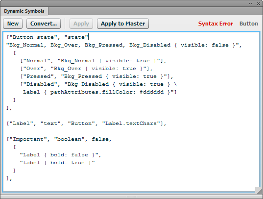
As you type, the panel is constantly evaluating the JavaScript code that you're typing and displays the warning if it doesn't compile. As long as a syntax error is detected, the Apply button will be disabled to keep you from applying buggy properties to the symbol.
However, just because the properties compile into valid JavaScript arrays doesn't mean the rich symbol syntax is correct. For instance, an array may refer to a non-existent element or property. These errors are suppressed in the UI so they don't trigger an error dialog, but they are written out to the Fireworks Console if it's installed. It's generally a good idea to install the console and have it open while editing symbols so that you can see if there are errors in your property arrays.
Also keep in mind that the properties are applied from first to last, so a later property can override the effects of an earlier one. Achieving the desired look for the symbol's elements may sometimes require reordering the properties.
Updating the master symbol in the Common Library
When you edit the properties of a selected symbol via the Dynamic Symbols panel, all instances of that symbol in the current document get the changed properties. But the master symbol file in the Common Library folder isn't updated. To apply the changes to that file, click the Apply to Master button in the panel. This will replace the existing .graphic.png file in the symbol's original location with the updated version of the symbol from the current document. You can then drag the symbol out of the Common Library panel into a new document and get the latest version.
When you click Apply to Master, the selected instance's properties are reset to their defaults, so that dragging the symbol from the Common Library panel will insert a symbol with default values.
Clicking the Apply button doesn't automatically update the master because doing so is a little slow and you may want to tweak the symbol just in the current document without making any changes to the original symbol in the Common Library folder.
Converting an existing symbol
In addition to creating a brand new symbol, you can convert an existing symbol to have dynamic properties. Click the Convert... button and then select the symbol you want to convert in the file selection dialog. This will open the symbol file and insert the hidden [DATA] element. After that, you can enter properties for the symbol into the panel as described above. Note that any existing .jsf file for that symbol is not incorporated into the symbol properties. You will need to recreate the behavior of the existing .jsf file using the syntax described above.
Complex symbol example
Here is a more complex example of creating a rich symbol with many properties. The layer structure and Symbol Properties panel for a Flex ComboBox symbol might look like this:
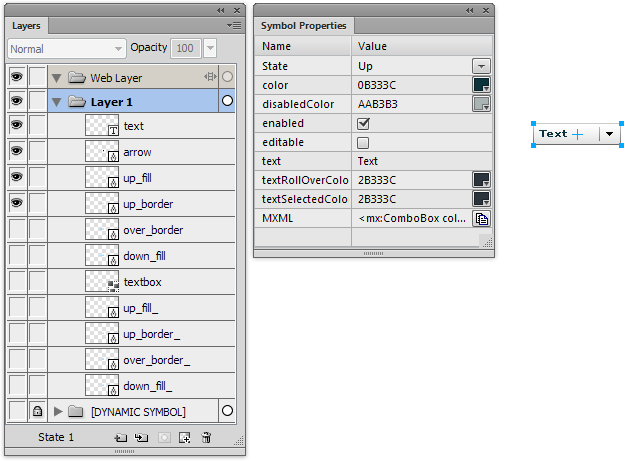
The following dynamic symbol properties would create a symbol with the same behaviors as the one that comes bundled with Fireworks:
["State", "state", "up_fill, up_border, over_border, down_fill,\
up_fill_, up_border_, over_border_, down_fill_ { visible: false }",
[
["Up", "up_fill, up_border, up_fill_, up_border_ { visible: true }\
text { pathAttributes.fillColor: @color }"],
["Over", "up_fill, over_border, over_border_ { visible: @enabled }\
up_fill_ { visible: @editable } \
text { pathAttributes.fillColor: @textRollOverColor }"],
["Down", "down_fill, over_border, down_fill_, over_border_ \
{ visible: @enabled } up_fill_ { visible: @editable } \
text { pathAttributes.fillColor: @textSelectedColor }"]
]],
["color", "color", "#0b333c"],
["disabledColor", "color", "#aab3b3"],
["enabled", "boolean", true, ["up_fill, up_border { visible: true } \
up_border_ { visible: @editable } \
text { pathAttributes.fillColor: @disabledColor }", ""]],
["editable", "boolean", [
"textbox, up_fill_, up_border_, over_border_, down_fill_ \
{ visible: false }",
"textbox { visible: true } up_fill, up_border, over_border, \
down_fill { visible: false }"
]],
["text", "text", "Text", "text.textChars"],
["textRollOverColor", "color", "#2b333c"],
["textSelectedColor", "color", "#2b333c"],
["MXML", "mxml", "<mx:ComboBox color='$1' disabledColor='$2' \
editable='$4' enabled='$3' text='$5' textRollOverColor='$6' \
textSelectedColor='$7'></mx:ComboBox>"],
Though somewhat complicated, this still represents only half as many lines of code as the .jsf file that implements the built-in Flex ComboBox component, while still providing the same functionality.
Release history
- 0.1.2
- 2013-06-01: Fixed bug that could cause crashes on OS X. Added a panel icon.
- 0.1.1
- 2013-02-06: Initial release.
Package contents
- Dynamic Symbols
- symbol
- JSMLDialog
- New Rich Symbol